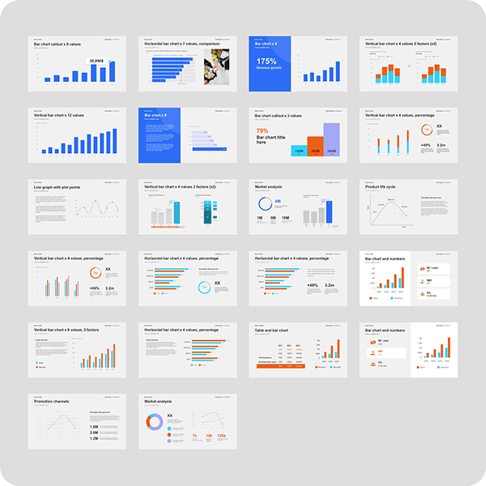
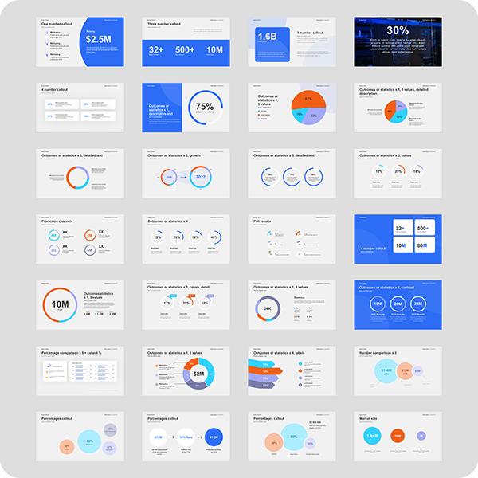
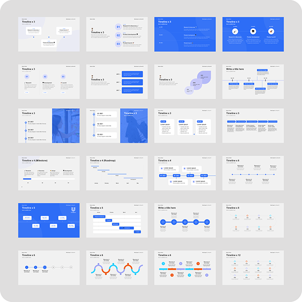

Étude de cas · Templates
Templates de slides
NIQ
Une bibliothèque de plus de 100 templates PowerPoint pour la division Digital Commerce de NIQ, pour que les équipes du monde entier puissent créer des présentations fidèles à la marque, sans designer.
- Client
- NIQ for Digital Commerce
- Année
- 2025
- Rôle
- Cheffe de projet & designer
- Outils
- Figma, PowerPoint

Le problème
NIQ avait déjà des templates corporate, mais ils n'étaient pas pensés pour Digital Commerce (ex-Data Impact). Son contenu, ses besoins en datavisualisation et ses échanges commerciaux diffèrent des autres produits NIQ, et le forcer dans les templates standards rendait les présentations génériques.
- Les templates n'étaient pas adaptés : les équipes les détournaient tant bien que mal, ou s'en passaient complètement.
- Rien de sur-mesure n'existait : aucune bibliothèque ne reflétait le vocabulaire, les KPI et les besoins visuels de Digital Commerce.
- L'incohérence grandissait avec l'équipe : avec l'expansion internationale de la division, les corrections design au cas par cas n'étaient plus tenables.
Il nous fallait un outil pensé pour Digital Commerce, mais toujours conforme à la charte de NIQ.
Mon rôle
J'ai piloté le projet de bout en bout, avec un autre designer :
- recherche utilisateur auprès des équipes de la division pour identifier les vrais cas d'usage récurrents,
- direction créative et design system,
- conception des plus de 100 mises en page dans Figma,
- pilotage et participation à la reconstruction de chaque template dans PowerPoint,
- définition de ce que les équipes pouvaient modifier et de ce qui restait verrouillé,
- une bibliothèque facile à parcourir et à utiliser sans formation en design.
01
L'approche
Concevoir pour des non‑designers
Les personnes qui utilisent ces templates sont des commerciaux, des analystes et des responsables régionaux, souvent pressés, sans charte graphique ouverte dans une autre fenêtre. Les templates devaient rendre le bon choix évident.
Dans le cadre de la marque
Les templates devaient respecter la charte de NIQ sans simplement adapter ses slides existantes. Digital Commerce avait besoin de mises en page pour la data e-commerce, la performance produit et les contextes retail concurrentiels.



02
La construction
Figma d'abord
Tout a d'abord été conçu dans Figma, en fixant les règles de typo, de couleur, d'espacement et d'icônes dans la lignée du système de NIQ avant de commencer PowerPoint. Figma était notre source de référence unique et nous a permis d'itérer vite avant la construction, bien plus longue, dans PowerPoint.
Construction dans PowerPoint
Plutôt que d'exporter des images à plat, nous avons reconstruit chaque template dans PowerPoint avec des éléments vectoriels natifs. Ils restent ainsi nets à toutes les tailles, modifiables là où il le faut, et fiables sur toutes les versions de PowerPoint et tous les systèmes utilisés dans le monde.
Verrouillage
Les éléments essentiels à la marque (fonds, position du logo, aplats de couleur et hiérarchie typographique) sont verrouillés pour éviter les modifications accidentelles. Les zones modifiables sont clairement signalées, pour que chacun puisse personnaliser le contenu sans casser le design.
Résultats
- La cohérence à grande échelle : pour la première fois, les présentations de toutes les régions partageaient une même identité visuelle, avec ou sans designer.
- Des équipes autonomes : plus de demandes de design ni d'attente de validation, pour des cycles commerciaux encore plus rapides.
- Conçu pour évoluer : de nouveaux templates peuvent être ajoutés avec le même système, au fil de l'évolution de l'entreprise.
- Une qualité perçue plus élevée : les présentations clients avaient systématiquement l'air conçues par des pros, ce qui renforçait la position de NIQ face à la concurrence.